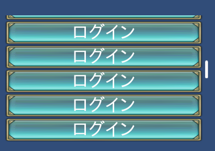

SCROLLBAR¶
スクロールバーを表示するためのコントロールです。
スクロール可能なコントロールと関連付けることによって、有効になります。
GROUPプロパティにSCROLLBARコントロールを関連づけることによって、スクロールバーを表示することができます。
スクロール可能なコントロールに対して、複数のスクロールバーを関連付けることも可能です。
スクロール可能なコントロールは次のものがあります。
SCROLLBAR(コントロール名) {
プロパティ1;
プロパティ2;
:
:
プロパティn;
};
記述例¶
#include "wr.h"
$w = 300;
LISTBOX(List) {
ID = 001_100_00000;
POSITION = 0,160;
STYLE = ANCHOR_BOTTOM;
SIZE = $w,160 - 16;
CONTENTS_SIZE = $w,48;
CONTENTS = {
CHECKBOX(IP) {
ID = 001_000_00020;
CAPTION = 001_000_00030;
STYLE = ANCHOR_LEFTTOP;
POSITION = 0,0;
SIZE = $w,48;
};
}
GROUP = SCROLLBAR(List);
};
SCROLLBAR(List) {
ID = 001_100_00010;
DEF_SCROLLBAR;
STYLE = ANCHOR_RIGHTTOP;
POSITION = 0,-16;
SIZE = 0,- 16 * 2;
};

位置とサイズ¶
通常のコントロールと違い、位置とサイズの扱いが特殊です。
位置とサイズは、関連付いているスクロール可能なコントロールからの相対になります。
また、アンカーによって、関連付いているスクロールのどの辺に沿って配置するからを指定できるようになっています。
有効なアンカーは こちら を参照ください。
#include "wr.h"
WINDOW(255_000_00001) {
STYLE = WINDOW_STYLE_NOTITLEBAR|WINDOW_STYLE_ANCHOR_CENTER;
POSITION = 0,0;
SIZE = 256,256;
TEX_ID = 100_000_00001;
};
CONTAINER(Map) {
ID = 000_000_000100;
POSITION = 0,0;
SIZE = RELATIVE_SIZE(0),RELATIVE_SIZE(0);
CONTENTS_SIZE = 512,512;
COLOR = COLOR32(255,255,255,255);
CONTENTS = {
BUTTON(A) {
STYLE = BASE_LEFT;
PRIORITY = -1;
POSITION = 0,-256;
TEX_ID = "TQML0";
};
BUTTON(B) {
STYLE = BASE_TOP;
PRIORITY = -1;
POSITION = 256,0;
TEX_ID = "TQML0";
};
BUTTON(C) {
STYLE = BASE_BOTTOM;
PRIORITY = -1;
POSITION = 256,-512;
TEX_ID = "TQML0";
};
BUTTON(D) {
STYLE = BASE_RIGHT;
PRIORITY = -1;
POSITION = 512,-256;
TEX_ID = "TQML0";
};
};
GROUP = SCROLLBAR(LEFT),SCROLLBAR(RIGHT),SCROLLBAR(TOP),SCROLLBAR(BOTTOM);
};
SCROLLBAR(LEFT) {
STYLE = ANCHOR_LEFTTOP;
TEX_ID = "SCBBH";
POSITION = 0,0;
SIZE = 0,0;
};
SCROLLBAR(RIGHT) {
STYLE = ANCHOR_RIGHTTOP;
TEX_ID = "SCBBH";
POSITION = 0,0;
SIZE = 0,0;
};
SCROLLBAR(TOP) {
STYLE = ANCHOR_LEFTTOP|LISTBOX_ITEM_STACK_H;
TEX_ID = "SCBBV";
POSITION = 0,0;
SIZE = 0,0;
};
SCROLLBAR(BOTTOM) {
STYLE = ANCHOR_LEFTBOTTOM|LISTBOX_ITEM_STACK_H;
TEX_ID = "SCBBV";
POSITION = 0,0;
SIZE = 0,0;
};
スクロールバーの方向¶
縦方向のスクロールバーだけでなく横方向のスクロールバーも設定可能です。
スタイルに次の値を設定してください。
- 縦方向: LISTBOX_ITEM_STACK_V
- 横方向: LISTBOX_ITEM_STACK_H
スクロールバーの表示制御¶
スタイルに設定することによって、スクロールバーの表示/非表示のタイプを選択できます。
以下の３タイプから選べます。
SCROLLBAR_DISPLAY_NORMAL(デフォルト)
領域がスクロール可能で、かつその領域をタッチしてスクロールさせているときだけ表示します。SCROLLBAR_DISPLAY_SCROLLABLE
領域がスクロール可能なときだけ表示します。SCROLLBAR_DISPLAY_ALWAYS
常に表示します。
プロパティ¶
代表的なデフォルト値¶
TEX_ID = "SCBRH";
STYLE = LISTBOX_ITEM_STACK_V;
COLOR = 1,1,1,1;
TEX_ID = テクスチャID,パーツID¶
TEX_ID = パーツID¶
テクスチャIDとパーツIDを指定します。
SIZE = 横幅,縦幅¶
スクロールバーの表示サイズを指定します。 GROUPによって、関連付けされたコントロールサイズとの相対サイズになります。
SIZE = 0,0; //display size
COLOR = R,G,B,A¶
カラーを指定します。 カラー変更することによって、含まれるコントロール全てに影響を与えます。
R,G,Bについては、0～2の間で指定してください。
1を超えたとき、そのカラー成分を2倍まで上げて表示することができます。
Aについては、0～1の間で指定してください。
STYLE = フラグ0|フラグ1|..|フラグn¶
コントロールの表示アンカーを指定できます。
| 表示位置アンカーフラグ | 説明 |
|---|---|
| ANCHOR_DEFAULT | アンカー位置を左上に設定
ANCHOR_LEFTTOPと同じ
コントロールの中心位置はデフォルトで、BASE_LEFTTOPになる。
|
| ANCHOR_LEFTTOP | アンカー位置を左上に設定
コントロールの中心位置はデフォルトで、BASE_LEFTTOPになる。
|
| ANCHOR_LEFTBOTTOM | アンカー位置を左に設定
縦には下辺を基準に配置
コントロールの中心位置はデフォルトで、BASE_LEFTBOTTOMになる。
|
| ANCHOR_RIGHTTOP | アンカー位置を右上に設定
コントロールの中心位置はデフォルトで、BASE_RIGHTBOTTOMになる。
|
実際の配置は下図を参照ください。

機能を制限するスタイルは以下のものがあります。
| 機能制限スタイル | 説明 |
|---|---|
| HIDE | 表示を隠す。 |
| LISTBOX_ITEM_STACK_V | スクロールバーの方向を縦方向に設定する |
| LISTBOX_ITEM_STACK_H | スクロールバーの方向を横方向に設定する |
| SCROLLBAR_DISPLAY_NORMAL | 領域がスクロール可能で、かつその領域をタッチしてスクロールさせているときだけ表示します。 |
| SCROLLBAR_DISPLAY_SCROLLABLE | 領域がスクロール可能なときだけ表示します。 |
| SCROLLBAR_DISPLAY_ALWAYS | 常に表示します。 |